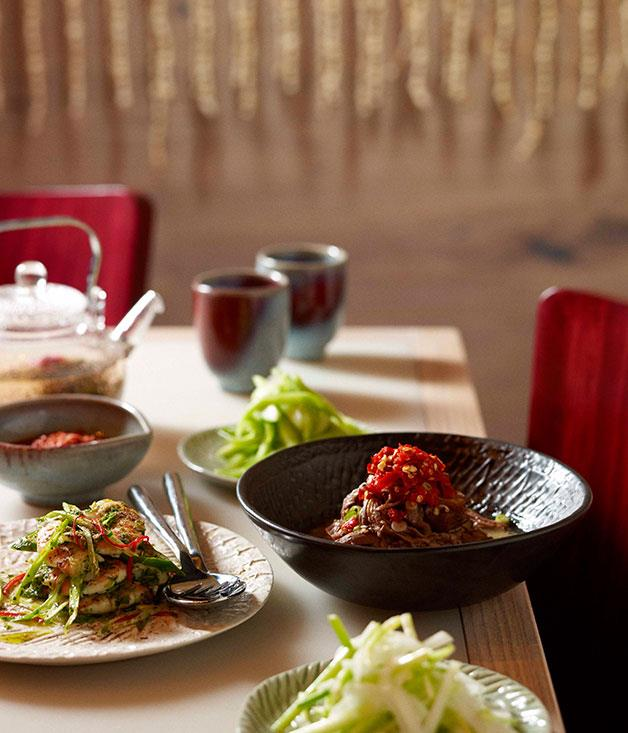

Home Button
Neil Perry's shredded lamb shoulder with salted chilli
This is a light dish, served like a salad. The salted chillies in this recipe have many applications. Use them as a condiment to add extra flavour to steamed fish, or make them into a dressing similar to this and drizzle it over chicken. They'll keep for up to six months and only get better with age. You'll need to start this recipe 3 days ahead.

Ingredients
- 1 kg lamb shoulder, bone in, trimmed
- 30 ml chicken stock
- 30 ml peanut oil
- 5 ml (1 tsp) sesame oil
- 10 ml (2 tsp) light soy sauce
- 5 ml (1 tsp) rice wine vinegar
- 5 gm (1 tsp) white sugar
- 3 green onions, white and pale green
MAIN
- For salted chillies, pulse chillies and salt in a food processor until combined, transfer to a small sterile container and stand at room temperature for 3 days, then store in refrigerator until required. Makes about 1/3 cup.
- For master stock, bring all ingredients, reserved green onion tops and 3 litres water to the boil in a stockpot over medium-high heat. Add lamb, reduce heat to low, weight with a plate and simmer until very tender (2 hours). Remove from heat, cool lamb in master stock then remove, coarsely shred and set aside (discard bone).
- Combine chicken stock, oils, soy sauce, vinegar, sugar, green onions and 10gm salted chillies in a bowl and mix well.
- 1To serve, arrange shredded lamb on a serving plate, spoon over dressing and serve immediately.